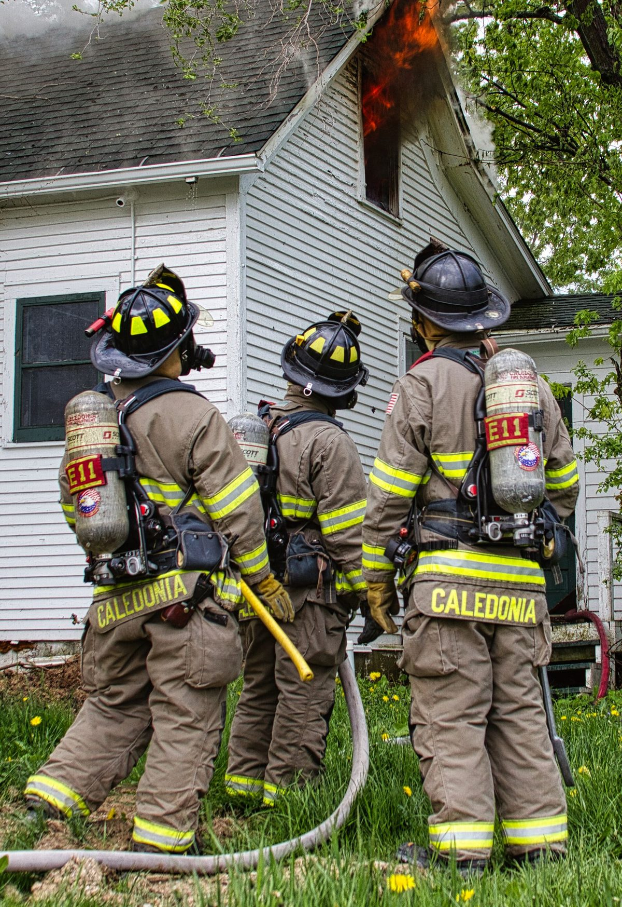

Trois catastrophes, trois recherches différentes.
Hub et parlé est la structure: une page d'aperçu pour le commerce, des pages dédiées pour l'eau, les moisissures et le feu, et des pages spécifiques de phase sous chaque.
Conçu pour les métiersqui répondent aux urgences.
Voici exactementCe que je fais.

Quand le tuyau éclate,
Ils devraient te trouver avant.
Les recherches sur les catastrophes ne défilent pas et ne font pas de comparaison. Votre site doit répondre en quelques secondes : est-ce que vous gérez cela, êtes-vous près de moi, puis-je appeler maintenant.
- ✓Pages spécifiques aux catastrophes— eau, moisissure, feu, chacun avec des CTA d'urgence et disponibilité réelle
- ✓Phase pages— l'extraction, le séchage, l'assainissement des moisissures, la reconstruction — les recherches entre la catastrophe et la facture
- ✓Couverture des villes voisines— pages réelles pour les villes réelles, non pas modèles de noms échangés
- ✓Teneur en moisissures mesurée— certifications et processus, jamais les allégations de santé que vous ne pouvez pas soutenir
La moitié de vos meilleurs emplois ne toucheront peut-être jamais Google.
Une grande partie des travaux de restauration – en particulier les incendies et les pertes d’eau importantes – proviennent d’experts en sinistres, de gestionnaires immobiliers et de recommandations professionnelles. Ils vous vérifient comme le font les acheteurs : informations d’identification, processus, documentation.
Pourquoi les restaurateursChoisissez-moi.
| Ce que vous obtenez | Pourquoi ça compte |
|---|---|
| Parle-moi. | Pas de gestionnaire de compte, pas de remise. La personne qui vérifie votre liste est la personne qui la corrige. |
| Métiers et services, pas tout | Je fais du référencement local pour les entreprises de services en particulier — pas de tout pour tout le monde. |
| Nombres simples, pas de jargon | Si un rapport a besoin d'un dictionnaire, il cache quelque chose. |
| Un plan clair | Un tarif mensuel unique avec des travaux visibles chaque mois. Aucune couche d’agence gonflée ne grignote votre budget. |
Un plan.Tout est inclus.
- ✓ SEO on-page
- ✓ SEO technique
- ✓ SEO off-page et développement d'autorité
- ✓ Liens partenaires dès le 3e mois
- ✓ SEO local pour 1 zone ou ville
- ✓ SEO IA : AEO, GEO & AISO
- ✓ Rapport mensuel
- ✓ WhatsApp direct ou votre plateforme préférée
Même plan de référencement que sur la page d'accueil — pas de marquage de restauration. Eau, incendie, moisissure, inondation: un plan couvre chaque service d'urgence; couvrant plusieurs zones de service?Demandez un devis personnalisé.
La prochaine catastrophe dans votre zone de serviceest déjà à la recherche.
Parlez-moi de votre entreprise de restauration — Je vais renvoyer un audit gratuit de votre présence Google: ce qui apparaît dans les recherches d'urgence, ce qui manque, et quels emplois vont aux concurrents.
Obtenez mon audit gratuit →